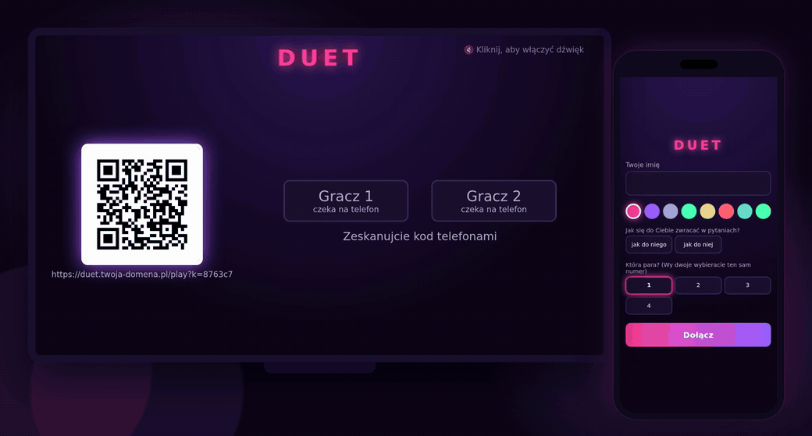

💞 Duet
Gry i quizy dla par. Projektor pokazuje grę, telefony są pilotami — wejście przez kod QR, bez aplikacji i kont.
- 13 trybów, od „Co wolisz” po rysowanie palcem
- do czterech par przy jednym ekranie
- jeden plik w Go, ok. 25 MB RAM, podpisane wydania